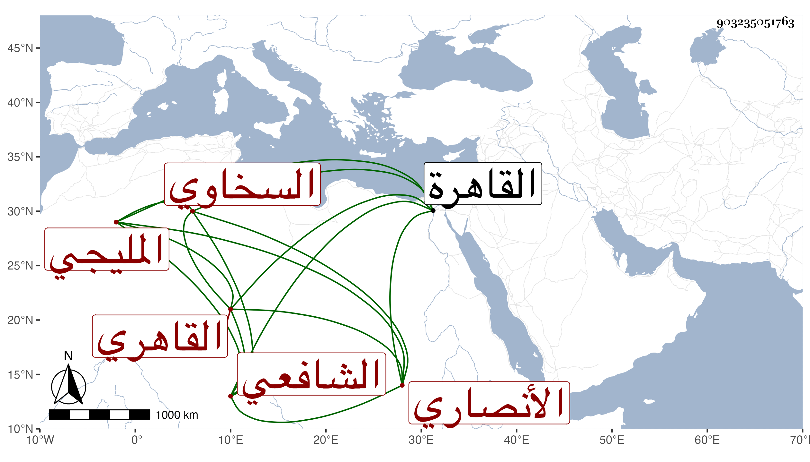

0902Sakhawi.DawLamic.ITO20230111-ara1.EIS1600.903235051763
Biography ID: 903235051763
749
محمد بن محمد بن محمد بن محمد بن محمد بن محمد بن محمد بن محمد بن محمد البدر أبو البقاء الأنصاري السخاوي المليجي الاصلي القاهري الشافعي سبط الحسني لكون أبي أمه التي هي ابنة للقاضي المجد إسماعيل الحنفي كان شريفا وهو سبط المجد أيضا ويعرف بالبدر الأنصاري . ولد في ليلة السبت حادي عشر جمادى الاولى سنة عشر وثمانمائة بالقاهرة ونشأ بها فحفظ القرآن وأقبل على الاشتغال حين قارب البلوغ وأدرك الشهاب الطنتدائي فأخذ عنه وانتفع بالشرف السبكي في الفقه وبأبي الجود في الفرائض وبشيخنا ابن خضر فيهما وفي العربية في آخرين وسمع على شيخنا اليسير ثم معنا على الرشيدي ونحوه وتكسب بالشهادة وقتا وتنزل في سعيد السعداء وغيرها وأقرأ ولد الشهاب الشطنوفي و غيره وكان بارعا في الحساب والفرائض مشاركا في الفقه والعربية وغيرهما كثير الاسقام متقللا من الدنيا قانعا باليسير منجمعا متوددا ذا نظم وسط ونثر وتصانيف منها شرح تنقيح اللباب والرحبية ... ، كتبت عنه من نظمه أشياء منها قوله :
| لقد تعجبت ممن يحتمي زمنا | عن الطعام لخوف الداء والوجع |
| وليس ذا حمية عن ذنبه أبدا | خوفا من النار والتوبيخ والفزع |
مات في يوم الأحد ثاني عشر رجب سنة تسع وستين رحمه الله وإيانا .
